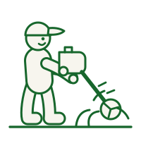
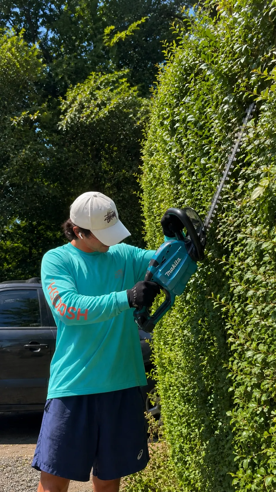
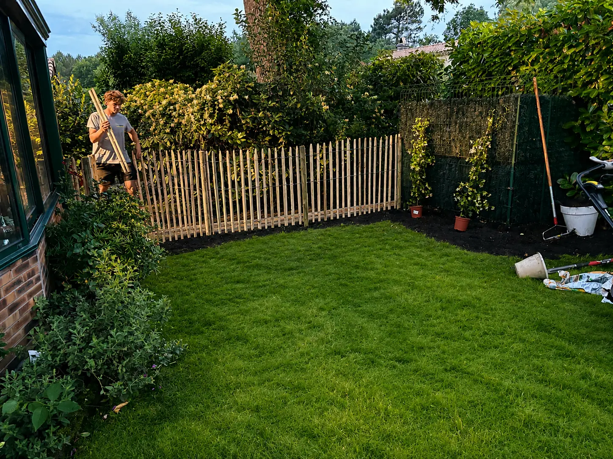

Jardinier en Gironde
Un jardin entretenu toute l'année, sans y penser.
Tonte, taille de haies, débroussaillage, désherbage. Une équipe locale qui passe à la fréquence que vous choisissez — et 50 % du montant vous revient en crédit d'impôt.
- Devis gratuit sous 24 h
- Crédit d'impôt de 50 %
- Entreprise déclarée services à la personne
- Toute la Gironde
Recevoir mon devis d'entretien
Réponse sous 24 h ouvrées. Sans engagement.
Partenariat commercial · VillaVerde Cestas
Vos plantes moins chères
En passant par Jardin de Gironde, vous profitez de tarifs préférentiels sur les végétaux de la jardinerie VillaVerde à Cestas. Un avantage réservé à nos clients, sur tous vos projets de jardin.
Pourquoi nous
Ce que vous obtenez

Un passage régulier, à votre rythme
Hebdomadaire, mensuel ou ponctuel : c'est vous qui décidez. Nous adaptons la fréquence à la saison et à votre terrain.

Une seule entreprise pour tout le jardin
Tonte, taille, désherbage, ramassage des feuilles, entretien des massifs : vous n'avez qu'un interlocuteur.

Du matériel professionnel, un travail net
Des lignes droites, des finitions propres, et l'évacuation des déchets verts comprise dans la prestation.

Crédit d'impôt de 50 %
Attestation fiscale fournie chaque année. Une prestation de 100 € vous revient réellement à 50 €, imposable ou non.
Prestations incluses
Ce que comprend l'entretien de votre jardin
- Tonte de pelouse à la bonne hauteur selon la saison
- Taille des haies, arbustes et massifs au bon moment de l'année
- Débroussaillage des terrains envahis et mise aux normes
- Désherbage des allées, bordures et massifs
- Ramassage des feuilles et nettoyage automnal
- Nettoyage des toitures et curage des gouttières
- Évacuation des déchets verts incluse
- Compte-rendu après chaque intervention

Déroulement
Comment ça se passe
Vous décrivez votre jardin
Par téléphone ou via le formulaire. Surface approximative, fréquence souhaitée, contraintes d'accès.
Nous chiffrons sous 24 h
Un devis clair, détaillé, sans engagement — avec le montant après crédit d'impôt indiqué noir sur blanc.
Nous intervenons
Vous n'avez pas besoin d'être présent. Nous arrivons avec notre matériel et repartons avec les déchets verts.
Vous recevez votre attestation
Chaque début d'année, l'attestation fiscale à joindre à votre déclaration pour récupérer 50 %.
Avantage fiscal
Vous ne payez réellement que la moitié
L'entretien courant du jardin relève des services à la personne : il ouvre droit à un crédit d'impôt de 50 % pour les particuliers. Une prestation facturée 100 € ne vous coûte réellement que 50 €.
- Attestation fiscale fournie chaque année
- Valable même si vous n'êtes pas imposable
- Plafond de 5 000 € de travaux par an et par foyer
Le crédit d’impôt s’applique aux petits travaux d’entretien courant (tonte, taille, débroussaillage, désherbage), selon les conditions d’éligibilité en vigueur. Les travaux de création et d’aménagement n’y ouvrent pas droit.
Exemple concret
Réalisations
Le travail parle de lui-même
Des chantiers réels, photographiés sur le terrain, en Gironde. Pas d'images de synthèse : ce que vous voyez est ce que nous faisons.


Zone d'intervention
Nous intervenons partout en Gironde
Bordeaux · Mérignac · Pessac · Talence · Bègles · Villenave-d'Ornon · Gradignan · Cestas · Canéjan · Le Haillan · Le Bouscat · Bruges · Eysines · Saint-Médard-en-Jalles · Léognan · Cadaujac · La Brède · Martillac · Créon · Libourne · Arcachon · Andernos-les-Bains, et l'ensemble des communes du département.
Bon à savoir
Questions fréquentes
Comment fonctionne le crédit d'impôt de 50 % ?
Nos prestations d'entretien courant du jardin relèvent des services à la personne. Vous réglez la facture normalement, nous vous remettons une attestation fiscale en début d'année suivante, et 50 % du montant vous est restitué par l'administration — que vous soyez imposable ou non. Le plafond est de 5 000 € de travaux par an et par foyer.
Suis-je obligé de signer un contrat à l'année ?
Non. Vous pouvez faire appel à nous pour une intervention ponctuelle. Le contrat d'entretien régulier existe pour ceux qui préfèrent ne plus y penser, mais il n'a jamais rien d'obligatoire.
Dois-je être présent pendant l'intervention ?
Ce n'est pas nécessaire dès lors que nous avons accès au terrain. Beaucoup de nos clients nous confient l'entretien pendant leurs absences ; nous vous envoyons un compte-rendu après le passage.
Que faites-vous des déchets verts ?
L'évacuation est comprise dans nos prestations de taille et de débroussaillage. Les végétaux sont apportés en déchèterie ou broyés sur place selon le volume et votre préférence.
Sous quel délai intervenez-vous ?
Vous recevez votre devis sous 24 h ouvrées. La première intervention a généralement lieu dans la semaine, selon la saison et la charge de travail en cours.
Contact
Demandez votre devis gratuit
Décrivez votre projet : nous vous répondons sous 24 h avec une estimation claire et sans engagement.
- 06 30 64 47 09
- jardindegironde@gmail.com
- Toute la Gironde
- Lun – Sam, 8 h – 19 h
Recevoir mon devis gratuit
Réponse sous 24 h ouvrées. Sans engagement.